| 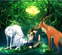 | 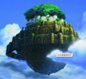 |  |
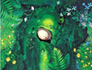 |
第一节、生存/自由
《易传》谓：“天地之大德曰生。”从《风之谷》、《天空之城》到《幽灵公主》，是宫崎骏的关于人类生存主题的三部曲，影片中的颓败、荒凉的画面向我们传递出隐隐的压抑感，展示出人类生存困境的主题.这三部影片题材虽然不尽相同，却都含有对人类和自然的哲学思考，对人类生存意义的积极探索，对生命的敬畏和爱。
《风之谷》一开始向我们展示的产业文明毁灭千年之后，释放出有毒瘴气的“腐海”侵蚀着人类的栖息之地，“风之谷”的人们为了生存，艰难的固守着在这个世界上残留下来的一方净土。娜乌西卡既保护着“风之谷”，又守护着森林，是穿梭于人类和自然之间的使者，为了让人类和自然和平共处，她用生命作为代价来平息河姆对村落的进攻，只有生命才能抚慰生命，只有生命才能感召生命，也只有生命才能把人和自然统一起来，当最后她“身穿蓝衣，走在一片金色的草原”上的时候，宫崎骏向我们展示的是人和自然的和谐之光，“她对于人类生存本质意义上的拯救，并不仅仅在于对风之谷的保护，而在于对自然之于人类的母性性质的重新发现和揭示。”正是因为自然的庇护，人类才有纯净、明丽的生存空间。
《天空之城》围绕一颗飞行石展开，思考的是文明和自然的关系。希塔告诉贪婪的慕斯卡，“天空之城”之所以不能生存，是因为“离开了大地的泥土”，只有“植根厚土，沐浴清风，呵护着种子度过严冬，和鸟儿一起歌唱春天。”只有将人类文明融于自然，人类也才能不断向前，而人类无尽的贪欲将会毁灭掉人类自身，这也是宫崎骏对人类自身生存命运的关注。
中国漫画家丰子恺先生曾经说过，护生就是护心，保护生灵、关注生存其实也是在保护我们自己心灵的成长，所以，宫崎骏的作品让我们感受到人生的深度的同时，也能够体会到他发自心灵的呐喊。《风之谷》中的娜乌西卡是在用心灵和大自然、和自然界中的生灵进行交流，《侧耳倾听》又名《梦幻街少女》，是一部有关少女的心灵成长的故事，在这里我们倾听到的是少女月岛滴滴的心灵的私语，宫崎骏的动画是清澈的、是纯净的，当这种清澈和纯净进入到心灵深处，会有一种深深地感动，他是用一种“生”的力量在催促“心”的成长。
2004年宫崎骏的最新力作《哈尔的移动城堡》，短短两天就打破当初《千与千寻》创下的超高票房，并且己确定会在全世界50个国家上映。短短两天就创造了 14亿8384万日元的超高票房，动员观众人数多达110万4980人次，打破了2001年《千与千寻》创下的票房纪录和观众人次纪录。在这部影片中我们看到宫崎骏关注生存的意识不但没有减弱反而有所增强，当年轻的苏菲被荒野女巫施魔法变成了一位90岁的老太太后，她没有放弃生命，而是选择了去一个人迹罕至的地方继续“活下去”，她用松动的牙齿咀嚼着又干又硬的馒头来维持生存，当看到一缕缕充满希望的阳光透过乌云的缝隙直射到大地上的时候，让我们感到万物生生不息的强烈震撼：生存意志，坚不可摧！
自由问题也是当代文化中的一个焦点性的问题。在宫崎骏的梦幻世界里对飞翔的情有独钟，是宫崎骏对自由的向往和追寻，呼唤自由的主题，使其动画电影焕发出永恒的魅力。自由是人类永恒的追求与向往，人类由于各种条件的限制，或主观的，或客观的，或主观与客观结合在一起的种种的障碍，使身处现实社会中的人们很难完全按照自己的意愿进行选择，如果艺术家没有发现人类的这种当代性不幸和困境，便难以用自由观来关照人类生存和发展，而宫崎骏动画电影中飞翔的美丽与壮观则潜在的满足了人对自由的向往。
《红猪》中飞行员波尔戈驾驶着红色的战机在蓝色的亚德里亚海和蓝天白云之间潇洒的飞行，他的每一次酣畅的飞翔都奏出了一首首绝妙的空中畅想曲，传达出宫崎骏对自由的尽情讴歌，也使得这部雅俗共赏的影片在当年度《电影旬报》的日本最佳影片专家评选中获得第四名，读者评选中获第三名，票房收入达到28亿日元，成为当年度日本最卖座的影片。
从《龙猫》中的姐妹二人身上我们可以感受到一种有活力的自由精神和精神生长的快乐，她们在木屋前的草地上幸福的奔跑、嬉戏，那种自由的成长缘于对生命的内在渴求。当姐妹俩趴在龙猫的肚皮上在空中飞翔时，脱离了世间的牵绊和惆怅，给童年的成长增添了更多的快乐和梦想。当小白龙驮着千寻(《千与千寻》)在洁白的天际飞翔的时候，千寻回忆起自己在幼时曾经被小白龙从水中救起，由此记起了小白龙的名字，从汤婆婆那里为小白龙赢得了自由。
宫崎骏的飞翔带给我们一种释放感。在1989年7月15号《TEREPARU》对宫崎骏的采访中，他说：“在空中遨游，可以真实地感觉到自己周围的一切。总是用同样的视角去观看，这个世界会显得平淡无奇，充满束缚与棱角，自己也会莫名地产生一种力不从心的感觉。然而，一旦改换了视角，你会觉得世界多少变得柔和起来;一旦不再墨守成规，你会看到世界那么多姿多彩的面庞。”红猪驾驶红色战机凌驾于国家法律与政体之上，龙猫的飞翔带来了成长的欢乐，千寻的飞翔抚平了人的内心中欲望的沟壑，战胜了人世的丑恶。
正如宫崎骏所说，放弃了飞翔便不会再有美丽的梦想，那是宫崎骏对自由的一种由衷的憧憬，正是影片中那些洁净美丽的飞翔，带给我们心灵上的自由和新生。
| 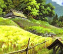 | 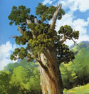 | 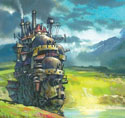 | 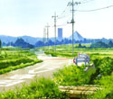 |
第二节、缺失/寻找
物质文明的高速发展，人类的精神空间逐渐缩小，导致人类精神的困顿、苍白和匮乏，使人类文明出现了不平衡的发展，从而限制了人类自身的发展。人生目的和生活意义的丧失，人际关系的不信任，尤其是青年人更是表现出对自我信任的丧失，没有了生活的实感，象征生命和希望的“绿色”在喧嚣的现代都市更是消失得没了踪影。宫崎骏用自己的动画电影来关注现代人的精神世界和生存状态，呼唤现代人热爱自己的生存空间，提醒人们从自然界中寻求精神上的抚慰，找回自我，在自然中追求心灵上的宁静美。
在《风之谷》《天空之城》《幽灵公主》等影片中，他试图通过对文明失落的根本原因的追问，折射出现存的人类文明的弊端，并最终作出对人类文明“该往何处去”的现实问题的思考。在《风之谷》中，宫崎骏展示的是曾经辉煌无比的现代工业文明，终于在“七日之火”的浩劫中彻底毁灭，人类社会最终又退回到了农耕时代。所谓的“七日之火”正是人类凭借现代化的高科技条件制造出来的，是人类用来进行侵略和征服的工具，可最终被摧毁的却是人类自身。“风之谷”的公主娜乌西卡驾着飞翔器不停地在风之谷和森林上空翱翔，目的是要寻找到让人类存活下去的途径，寻找那曾经失去的世界。
数千年来的人类文明，从来没有像今天这样使人类深深地感到恐慌和不安，在过去数千年的人类文明中，由于我们文明的外部因素—如火山爆发、洪水等自然原因出现了各种地“末世观”危机意识，但是现在却不同，今天文明社会的危机是我们人类自身所招致的—如核战争、资源枯竭、全球变暖等危机，这只能靠我们人类自己找到解决的办法，靠人类自己担负起“自救”的责任，人类才能更好、更安全的生存下去。
《天空之城》是宫崎骏在1986年的动画电影，也是吉卜力工作室的开山之作，故事背景是建立在喧嚣的空想工业社会，雷帕特人经过漫长的历史过程后，拥有了高度的智慧和文明，他们靠从地层深处提炼出来的飞行石来支撑起庞大的天空之城，几百年后，在大地上过着平静生活的雷帕特公主—希塔从母亲那里继承了世代相传的飞行石，当海盗、军队为了霸占珠宝，幕斯卡为了控制雷帕特而抢夺飞行石的时候，希塔和少年巴斯一起踏上了寻找自己家园的冒险历程.但是当面对幕斯卡的贪欲时，希塔和巴斯决定还是念出那道使城堡毁灭的咒语，希塔知道，即使不念出咒语，因为离开了大自然的庇护，没有泥土的呵护，没有清风的沐浴，雷帕特城也不会长久的存在下去，只有自然才是人类永远的家园，所以，她选择放弃雷帕特城，回到自然的怀抱。在此也可以看出，宫崎骏关于文明和自然的关系，就如种子和泥土，离开泥土的种子，不会长成参天大树，同样，离开自然的人类文明，也不会长久存在。
在《龙猫》、《魔女宅急变》、《千与千寻》等影片中，宫崎骏表现出的是人在成长过程中的缺失，如果心灵上没有缺憾，内心深处也就不会有任何的企盼。
《龙猫》中，宫崎骏向我们描绘出人在成长过程中的母爱的缺失，因为母亲长期生病住院，在五月和妹妹May的心灵深处留下了很深的疮痛，所以，五月比同龄的孩子更懂事，更乖巧，当妹妹在雨中跌倒后，跟姐姐说：“我没哭，很勇敢吧？”没有妈妈在身边，她们不像同龄孩子那样可以任性的撒娇，反而要努力让自己更勇敢.当妹妹一个人玩耍的时候，无疑中发现了龙猫，在现实世界中寻找到了精神上的母爱替代，从此，生活中有了更多、更美的乐趣。May可以任意的、很有安全感的趴在龙猫舒适的大肚子上睡觉，就如睡在妈妈的身边，而龙猫也乐意接受这个孤独的孩子的依恋，对她表现出母亲的呵护。所以，May在姐姐的课堂上用画笔画出的是龙猫的形象，而不是妈妈的形象，因为她真切的感受到龙猫的存在，且对它有着很深的依恋，在妹妹走丢之后，五月想到的是向龙猫求助，在梦中，龙猫带她们在空中飞翔，和她们一起陪同种子成长，在影片中，宫崎骏用嫩嫩的绿芽来暗喻姐妹二人在生命成长过程中需要母爱的呵护。在母亲缺席的日子里，龙猫为她们填补了在心灵上的母爱空白，使她们在那段日子里得以健康、快乐的成长。由此可以看出，人在人类社会中缺失的东西可以在自然处得到补偿，也是宫崎骏在提醒亲情，关注生命的成长。
在《千与千寻》和《魔女宅急变》中，我们看到的是“自我”在现在社会中的丢失，所以，如何找回真实的“自我”，以此来完成自我的成长，是宫崎骏在影片中要告诉我们的。小魔女奇奇在面对了生活的失意后，重新用自己的眼睛来看周围的世界，敢于面对失败和不如意后，她又找回飞翔的信心，当终于勇敢地救出危难中的朋友后，她又恢复了生活的勇气，实现了自己的存在价值，找回“自我”。
正因为心底的“失落”，所以才有了“寻”。面临着失去自我的困境，千寻在神界的奇遇中，焕发出了全部的生命潜能和生存意志，认识到了真正的自己并努力找回自我，这一点也是宫崎骏对现代人生存困惑的一种提示。千寻最终凭借儿时的记忆，帮助小白找回真正的名字和身份，在“无面人”缺失友谊、孤独流浪的时候，与 “无面人”建立起友情，并带他离开“油屋”，寻找到真正属于他自己的“家”，当千寻救出父母，陪同父母一同离开“油屋”后，她已经找回了真正的自己。
在这个世界上要认识真正的自己已经很难，可是要找回真正的自己就更不容易，只有凭着对自然和生命的热爱和善良的真性情，才能在失落的世界里找到生存下去的理由，找回“自我”。
| 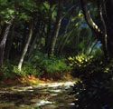 | 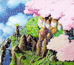 | 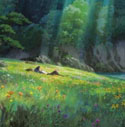 | 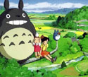 | 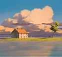 |
第三节、孤独/救赎
孤独是宫崎骏着意表现的一个带有现代特征的社会问题。宫崎骏作品中的主人公要么在孤独中实现拯救，要么拯救孤独中的生灵，孤独和救赎是宫崎骏的动画电影中不可分的一个表现主题。宫崎骏善于将其作品中的人物放在让人能充分体会到孤独的境地中，来体味人生，感悟生命。《风之谷》中的娜乌西卡只身一人在自然和人类之间穿梭，正是人类对自然的无知最终毁灭了人类自身的生存环境，娜乌西卡用心灵和生命努力地做着人和自然界的沟通，为了让人类和自然界情感共通，她甚至不惜牺牲生命，以此来抵消人类对自然所犯的罪恶。当人类僧恶飘扬着抱子的“腐海”和有毒的植物时，只有娜乌西卡知道毒源其实来自人类自身，正是因为人对自然的污染而导致了自然的反噬。人类对自然的敌意和自然对人类的愤怒，以及人类之间无休止地侵略和征服，是娜乌西卡一时很难化解开的，这使她更加孤独，当她和少年阿斯贝一起随流沙坠入地下，发现了曾经在梦中出现过的纯净世界后，她趴在地上久久地哭泣，在她身上承载了宫崎骏太多的忧虑和感伤。她坚信“战争只能使人类灭亡，只有和平才能生存”，所以不惜拿自己的生命来换取和平，在人类因无知和精神的麻木将自身逼向困境的时候实现对人类的拯救。
《红猪》改编自宫崎骏在杂志上连载的漫画《飞艇时代》，是他带有自传性质的影片，他将自己自喻为红猪波尔戈，影片的时代背景被设在第一次世界大战结束不久后的意大利。一生酷爱飞行的前意大利空军英雄波尔戈，自施魔法将自己变成一头猪，凭借自己出色的飞行技术驾驶红色飞艇孤身与亚得里亚海的空中强盗对峙，以此赚取赏金来逍遥度日。在波尔戈的身上集结了种种的矛盾：既怀着飞行员特有的且强烈的荣誉感，认为“不会飞的猪只是一只普通的猪”，又不愿意被编入代表着国家利益的政府空军，按照他的话说“猪是没有国家和法律的”，更不想象其他退役的飞行员一样堕落成“空贼”。宫崎骏从他的身上展示出一个背离国家和时代、与社会格格不入的中年男子的孤独与自负。之所以要变成一只猪是因为他想从俗世的无奈中脱身，他选择飞翔来逃避现世的生活，飞行是他在这个世界存在的最自由的生活方式，虽然他能拯救被“空贼”挟持的人质，保护亚得里亚海的安宁，却不能拯救自己从战友阵亡的回忆中挣脱出来，甚至不敢面对吉娜的感情。
在《红猪》中，宫崎骏将个体的存在置于浩瀚的宇宙中，使个体的有限与宇宙的无限构成强烈的对比，更加显示出个体的渺小和孤单，从而使人在心灵深处进发出最痛苦、最无奈的人生感叹。用俯拍镜头展现天空的空阔、浩茫，然后将镜头推向波尔戈的红色战机——作为他不同流俗的自我写照。然而，当他再度把镜头拉远时，天空中的那一个小红点，又让人深深地体会到孤独的波尔戈在茫茫的宇宙中的悲壮和苍凉。最终宫崎骏在影片中安排进了一个“绿色形象”—菲奥，来拯救迷惘中的波尔戈，她的勇敢、智慧、善良让他看到了“人类还有救”！
《幽灵公主》中的阿席达卡是孤独的，因为人类对自然所犯的过错，他的右臂受到诅咒，按照自己族里的规矩，他再也不能回到自己的家园，为了寻找到罪恶的源头，他到达了“铁镇”，在人类居住的“铁镇”和幽灵公主居住的森林这两者不可调和的矛盾中做着自己的努力，使本来就是局外人的他更是处于了尴尬的处境。当他为了从“铁镇”的头领幻姬那里救出桑的时候，他被人类从火枪中射出的子弹射穿了胸膛，却还是坚持着把桑送到了森林，当桑清醒过来后，又差点被她刺穿喉咙，深深地体现出他的悲剧性，也正是因为他不受社会归属的束缚，他才可以用自己的没受到污染的眼睛看世界，清醒地看待人类和自然的关系。他不像桑一样僧恨人类，作为人类社会中的一员，他能够深切体察人类为生存而付出的艰辛和苦难，他也相信自然界中的一切生灵都拥有平等的生存权利，这是一种超越了幻姬和桑的对生命存在的认识，阿席达卡的意识是宫崎骏对人类在未来时空中的期望，他希望通过影片最终能够唤回人类对自然的尊重和敬畏。
《幽灵公主》中的桑是孤独的，虽然身为人类中的一员，却自幼被父母抛弃在森林中，由白狼神抚养长大，把白狼神视作自己的母亲，有着对人类的与生俱来的仇恨，她把森林看作自己的家园，与森林中的动物一起对抗着人类对森林的破坏，全身心地担负起拯救森林的责任。麒麟神是孤独的，作为森林之神，它孤独地守护着人类和森林，却还是得不到森林中动物的理解，它试图用温情来提示幻姬，让幻姬对准它的猎枪开出鲜艳的花朵，却最终也没有逃得过人类的杀戮，它能够给予生命，同时却也能带走生命，随着它的死亡，所有的绿色都消失，森林中的一切都变得荒芜。“铁镇”的孤独就如飘浮在空中的雷帕特城(《天空之城)))一样，是宫崎骏安排的对日本乃至整个人类社会的一个缩影，日本的岛国的地理位置给日本人带来的一个重要影响就是孤立感，日本人总是感觉到在这个世界上是孤独的，宫崎骏也不例外，借此表达出人类社会离开自然，离开大地后自身存在的孤独。
人类的孤独和不得不承担起的拯救的主题一直贯穿在宫崎骏的作品中，除了展示人在自然界中的孤独外，宫崎骏还在《龙猫》、《魔女宅急变》、《千与千寻》等影片中细腻的刻画了主人公在成长过程中的孤独和救赎。(龙猫》中姐妹二人在母亲生病住院，父亲忙着继续读书，无暇照顾自己的日子里，相互支撑着共同成长。《魔女宅急变》中的小魔女奇奇在一陌生的城市里经历生活的失意，学会了用自己的眼睛看世界，重新找回自己，慢慢学会长大，终于在关键时刻救出了悬在空中的朋友“蜻蜓”。《千与千寻》中的千寻在一个对她来说完全陌生的世界里学会劳动，对人善良、诚恳，她首先是实现了“自救”，使自己从一个不谙世事的女孩长大成为可以拯救别人的有爱心和责任心的女孩，而后又完成了对别人的拯救，她帮助小白找回自己的名字，找回原来的自己，帮助“无面人”找到属于自己的家园，让他不再因为孤独而去蚕食生命，她带领汤婆婆娇生惯养的儿子作了一次有意义的旅行，使他不再惧怕外面的世界，最终千寻救出了父母，完成了自己的神界之旅。
当90岁的苏菲((哈尔的移动城堡》)来到哈尔的城堡后，便担当起了拯救城堡中所有人包括哈尔、荒野女巫还有那团调皮的火焰的责任，正是因为她的正义、善良和勇敢让他们获得自由的同时，最终解除自己身上的魔咒，通过对稻草人的拯救缓解了两个国家的战争，从小处看，苏菲的行为是对人身自由的拯救，从大处而言，是对道德和正义的拯救，这也是宫崎骏动画的真正用意之所在。
| 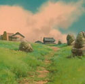 |  |
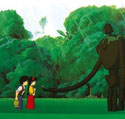 | 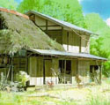 |
第四节、净化/再生
日本人是水和沐浴的崇拜者，所以，在宫崎骏的大多数作品中都有对水和沐浴的描绘，水和沐浴在他作品中不止是洗涤人的身体，还有着净化灵魂和心灵的暗喻。在《风之谷》中，产业文明毁灭之后，正是被人类认为散发出有毒气体的“腐海”作为一个巨大的净化系统，净化着被产业文明所污染的环境，保护着人类的生存环境，在“腐海”的底部是再生后的干净、纯洁、清新的森林世界。对生命的净化和在净化后的重焦的主题，在宫崎骏作品中有着明显的表达。影片最后的宗教式的结尾，让娜乌西卡通过自然的力量复活，是宫崎骏的用意所在，用她的再生寄希望于人类文明的再生，实现人类与自然的平衡发展。
在《幽灵公主》中麒麟神所饮用的生命之水，以治愈和净化的神奇魔力，这一湖的生命之水纯净、澄明，润泽着自然界的一切生灵，让生命重新释放出活力。当桑把阿席达卡受伤的身体放在水中，等阿席达卡醒来后，他胸膛上的伤口却神奇的痊愈了，当他把被野猪神诅咒的右臂放在水中后，他疯狂发作的右臂很快归于平静。当麒麟神终于从人类手中找回自己的头颅后，森林又开始慢慢的出现了嫩绿的生机，可爱的树神又探着脑袋出来玩耍。这是崎骏的生命再生思想的体现，他不想让现世的人绝望，也是因为他还怀抱着对人类的希望，只是用类似世界末日景象来提醒一下已经麻木的人类，主宰“生”和“死”的向来都是自然之神，而人也不过是自然界的一部分，并非自然界的主宰者，所以人类企图摧毁森林来证明自己强大的做法是愚蠢的，最终只会自取灭亡，而自然还是以她始终的宽厚和博爱来对待人类所犯的罪过。影片的最终目的是让人类在自省中重建人类的生存空间和精神家园，在世界末日还未到来之前重新思索人类和自然的关系，重建人类文明。这是宫崎骏的一种静悄悄的革命精神，让人类在看到社会灭亡之前的恐怖后反思自身，从而打碎旧的建立起新世纪的适合人类与自然共存的文明社会。
在《千与千寻》中，宫崎骏通过描写千寻在“油屋”的一切经历来体现净化和再生这一母题。“油屋”是由汤婆婆控制的专门招待各方神灵洗浴的场所。当老河神拖着面目全非的身体来到“油屋”的时候，谁都不知道是哪路神仙，当千寻费劲艰辛帮它完成洗浴后，才恢复了它本来的面目，也因此，河神拿出一个可以让父母获得重生的“苦丸子”来答谢千寻。但是随着事情后来的发展，当小白因为吞噬了汤婆婆的孪生姐妹一一钱婆婆的魔印而变得奄奄一息时，千寻咬下“苦丸子”的一半，给小白服用，使得小白吐出魔印，现出人形。之后，在“无面人”吞噬“油屋”的蛙男、艺妓和食物时，千寻又将丸子的另一半该“无面人”吞下，等他吐出被吞噬的各种食物后，千寻带他一同踏上了可以获得新生的心灵之旅，坐着浮在水面上的有轨电车，千寻、“无面人”、汤婆婆的娇生惯养的儿子，一同在清澈的、荡涤心灵的“水”的世界里做一次生命的畅游，当望着窗外清澈、透明的水的世界时，没有都市的喧闹和浮躁，一切都归于平静，包括电车上的人和周围的世界。我们不得不惊叹于宫崎骏的超出常人的想象力，原来远离喧嚣和繁华之后的人的心灵会如此澄静，那是一种“此中有真意，欲辩已忘言”的境界，那水的世界不止为千寻他们一行，也为身处喧嚣和浮躁社会的我们提供了一块“心灵上的栖息地”。
当千寻终于凭借自己曾经在幼时落水的片断的记忆，帮助小白找回了自己的真实的姓名和身份后，也彻底地让小白获得了再生。也因为一次跟随千寻经受过水的洗礼后，汤婆婆的胖宝宝终于看到了外面世界的精彩、美妙和纯净，相信他以后再也不只是在汤婆婆设计的温室中成长。正是千寻通过自己的努力让他们获得新生，帮助父母实现了由猪向人的复原，而千寻也不再是原来那个冷漠、娇纵、怯懦的女孩了，当她回到原来世界后，她将完成自己的重生。